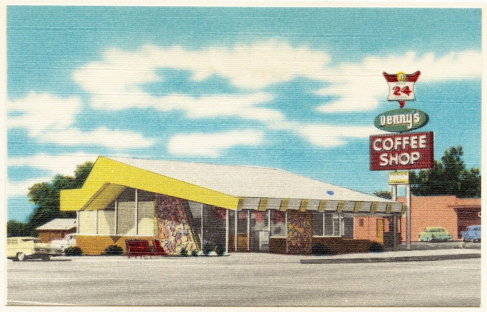

References / Illustration / 415
Denny’s Coffee Shop, Monrovia, postcard
A Tichnor Brothers linen postcard of a Denny’s in Monrovia, California: a yellow roof that sweeps up into a pointed prow, a glass front with stone panels, and a stacked pole sign.
- Source
- Boston Public Library, Tichnor Brothers collection #3974, via Digital Commonwealth
- Creator
- Tichnor Brothers, publisher
- Made
- Boston Public Library: ca. 1930–1945. The name Denny’s dates from 1959 (Wikipedia), so the card is probably 1959 or later.
- Style
- Googie (agent-proposed, not yet reviewed by a person)
- Moods
- Roadside, optimistic, sunny
- Evidence
- Downloaded and inspected the front of the Boston Public Library scan (Tichnor Brothers collection #3974, accession 06_10_009847) from Wikimedia Commons.jpg) at 1280 × 823 px. The back of the card was not inspected.
- Reviewed
- Rights
- Open license, stored. License: public domain. Rights policy
Context
Boston Public Library catalogs the card as “Denny’s Coffee Shop,” Monrovia, Los Angeles County, a linen-texture color postcard, 2 1/4 × 3 1/2 in., dated ca. 1930–1945, with “No known copyright restrictions.” Digital Commonwealth.
Wikipedia: Danny’s Donuts was founded in 1953 and renamed Denny’s Coffee Shops in 1959, open 24 hours. In the 1950s Armet & Davis designed a prototype Denny’s with a boomerang-shaped roof, and these designs helped spread Googie architecture across America. Wikipedia: Denny’s. The card does not name the architect of this building.
Observed
- A long, low roof slab in white rises at the left end into a bright yellow prow that points up and out past the wall, like a tail fin.
- The front is a band of tall plate-glass windows with thin mullions, broken by two panels of multicolored fieldstone.
- A striped awning in yellow and white runs along the side wall.
- A tall pole sign stacks three shapes: a red-and-white chevron with “24”, a green oval with “Denny’s” in white script, and a red rectangle with “COFFEE SHOP” in white outlined capitals.
- Sky is saturated cyan with white clouds; the ground is pale gray; colors are flat and airbrushed, with the linen texture of the card visible.
- Late-1950s cars are parked at left and right.
Why it belongs
The card shows the daytime version of the style: saturated yellow, red, and green on white walls under a cyan sky, not neon on a night ground.
Each sign shape is different (chevron, oval, rectangle), so the pole reads as a stack of badges, a common Googie sign structure.
Borrow
Stack two or three badges of different shapes on one vertical line for a logo lockup.
Make one corner of a header panel rise into a point in the accent color.
Measured
Machine-extracted by tools/image-traits.py on . Full measurement.
- Mean chroma
- 0.16
- Palette
- #f3f0de 21%
- #81bec0 20%
- #93cace 7%
- #c9c0ac 6%
- #bbb29e 5%
- #493e34 4%
- #e4deca 4%
- #aba28d 4%

